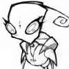
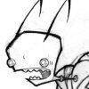
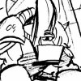
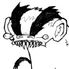
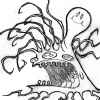
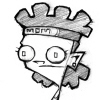
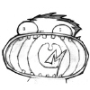
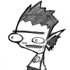

|
These
characters never made it into any complete episodes of Invader ZIM
but are worth mentioning. |
|
|
|
|
Almighty Tallest Miyuki |
|
|
 |
Major Appearances:
The Trial
Quote: "Tell me
what my finest minds are dreaming
up for the Empire."
Affiliation: The
Irken Empire
See also: Almighty
Tallest Spork |
|
The earliest known Almighty
Tallest, Miyuki is also the only known female leader of the Irken
Empire. It was during her reign that the Massive was designed. While
on Research Station 9 on planet Vort, Miyuki personally checked up
on what new technological developments were underway. Zim, who was a
scientist at the time, accidentally gets his infinite absorbing blob
creation too close to an infinite energy producing thingy. The blob
eats it and grows out of control. It then eats Miyuki and leaves a
trail of destruction. |
|
Almighty Tallest Spork |
|
|
 |
Major Appearances:
The Trial
Quote: "And as your
new Tallest, I am proud to
say that you Invaders in training are the future of the Empire! I'm
still taller than you though. SALUTE ME!"
Affiliation: The
Irken Empire
See also: Almighty
Tallest Miyuki |
|
The Almighty Tallest who
reigned between Miyuki and Red/Purple, Tallest Spork's time spent as
Almighty Tallest was extremely short. He gave a speech to the
Invaders in training and then was eaten by Zim's infinite energy
absorbing blob. Zim later used an inflatable model of Spork to try
and escape his Existance Evaluation Trial. |
|
Cyborg Kitten |
|
|
|
Major Appearances:
Mopiness of Doom
Quote: none
Affiliation:
Experiment
See also: Professor
Membrane |
|
Dib walks home from another
defeat to find Professor Membrane tapping a seemingly normal kitten
with a spoon. After a certain amount of taps, the cat sprouts
cybernetic attachments, fires lasers from its eyes, and flies out of
the room. It returns later to comfort Membrane when Dib decides that
real science isn't for him. |
|
Destructio |
|
|
|
Major Appearances:
Ten Minutes to Doom
Quote: "I am
Destructio! The robot that will end all life on Earth! Off I go!"
Affiliation:
Membrane Labs, Zim
See also: Foodio,
Professor Membrane |
|
When Professor Membrane
competes with another scientist to see who can create a robot
quicker, Membrane finishes first with his robot Foodio. Dib arrives
with Zim's pak attached to his chest, causing his personality to
start to become overtaken by Zim. When the Zim personality ceases
enough of Dib, Dib scrambles over to the unfinished robot that the
other scientist started and programmed it to be Destructio, the
robot that will end all life on Earth. Destructio leaves, smashing
through a wall. When Dib gets Zim's pak detached from his body, he
goes off to pursue Destructio. |
|
The Digestor |
|
|
 |
Major Appearances:
The Nightmare Begins
Quote: none
Affiliation:
The Irken Empire
See also: |
|
A giant beast kept for
gladiatorial combat, The Digestor comes from a cut scene in The
Nightmare Begins. Instead of simply giving Zim his "secret mission,"
the Almighty Tallest originally teleported him into a fighting arena
with Irken Battle Armor. When the Digestor was unleashed to attack
him, Zim would have given the beast the sandwich that Tallest Red
gave him earlier. The pleased Digestor then would've skipped away
like a pleased child. |
|
Dinky |
|
|
 |
Major Appearances:
Roboparents Gone Wild
Quote: none
Affiliation: City
Zoo
See also: RoboMom,
RoboDad |
|
Dinky is the city zoo's
half monkey/half badger hybrid, created for a program that lets kids
make the animals they'd like to see. RoboDad steals Dinky from the
zoo as a replacement for Zim when they realize that Zim doesn't love
them (due to a malfunction, they start to think they are Zim's real
parents). They decide tjhat their new son's name should be Zim,
although Dinky is actually a female. Dinky destroys everything she
sees and wrecks Zim's base. "Old" Zim returns, wearing Hobo hair to
look like Dinky. He confronts Dinky and manages to subdue the beast,
then poses as the badger-monkey in order to get close to the
RoboParents. He uses a device to deactivate them and then reactivate
them in their original states. Just when all is well, the zoo
keepers abduct Zim, thinking he is Dinky, due to a tip from the Hobo
whose beard Zim took. |
|
Doctor Spanky |
|
|
|
Major Appearances:
Invader Poonchy
Quote: "What we have
here is a high impact-"
Affiliation: City,
Membrane Labs?
See also: Ted
Slunchy |
|
When Ted Slunchy reports on
the Poonchy incident, he consults Doctor Spanky, a specialist on
lasers. Ted listens to the random shouts of pedestrians instead of
the doctor, however. |
|
Foodio |
|
|
|
Major Appearances:
Ten Minutes to Doom
Quote: "I am
Foodio, the robot that will end world hunger. Off I go!"
Affiliation:
Membrane Labs
See also: Destructio, Professor Membrane |
|
Professor Membrane competes
with another scientist in completing robots. They work on brains to
be put in their robots' heads. Membrane finishes first and activates
as Foodio, the robot who will end world hunger. He leaves
immeadiately after activation. |
|
Groyna |
|
|
|
Major Appearances:
When Pants Ruled!
Quote: none
Affiliation: Skool
See also: The
Overtrouser |
|
A tough jock girl at the
skool, Groyna saves Dib from a mob of kids who have fallen under the
mind control of sentient space pants. She tells Dib (who had been
absent for a while) that Zim had arrived in skool wearing the pants
and anyone who got near him had to have a pair. Dib spots a pair of
pants moving on their own and goes to tell Groyna, but finds her
wearing a pair as well. |
|
Infinite Energy
Absorbing Blob |
|
|
 |
Major Appearances:
The Trial
Quote: none
Affiliation: The
Irken Empire, Experiment
See also: Almighty
Tallest Miyuki, Almighty Tallest Spork |
|
While working as a
scientist at Vort Research Station 9, Zim created an infinite energy
absorbing blob thing. While showing it to the visiting Tallest
Miyuki, the blob ate an infinite energy producing thingy and grew
out of control. It ate Tallest Miyuki and escaped, causing lots of
havoc. Later, under the reign of Tallest Spork, the blob came back
for its collar, which Zim still had. The blob busted through the
ceiling and ate Tallest Spork. What became of the blob after that is
unknown. |
|
The Overtrouser |
|
|
|
Major Appearances:
When Pants Ruled!
Quote: none
Affiliation: Space
See also: Groyna |
|
The Overtrouser is the
leader of the pants aliens. They are a parasitic race that latch on
to their hosts, looking like a pair of pants, and control them.
After taking over the city, the pants-controlled citizens capture
Dib and take him to the Overtrouser, who mindmelds with him in order
to tell him their story. The Overtrouser tells Dib that his race was
drifting around in their damaged spaceship until Zim contacted them
and offered to help in exchange for disposing of the infestation of
humans. Dib convinces the pants that Zim is a liar so they rebel and
swarm over to Zim's base. Zim reveals that he planned to launch the
humans, while still wearing the pants, into the sun in their new
ship. Dib, wearing the Overtrouser, fights Zim in a pair of giant
robot battle pants. They fight by doing a bizarre dance, and while
they dance the pants aliens crawl into their new ship. They leave,
abandoning the Overtrouser. |
|
Poonchy's Mom |
|
|
 |
Major Appearances:
Invader Poonchy
Quote: "I made fish
sticks! Yum, yum yum yum yum."
Affiliation:
Neighborhood
See also: Poonchy:
Drinker of Hate |
|
After Zim tries to set up
Poonchy to look like an Irken invader, Poonchy returns home and
tells his mom that he needs to unwind by playing video games.
Poonchy finds his room transformed by Irken technology and starts
playing a new video game, which activates a super weapon Zim
accidentally installed into his house. Poonchy's mom sleeps through
the chaos that follows, until the microwave dings and she snaps
awake. She gets insanely happy when she tells Poonchy that she made
fish sticks for him. Poonchy unplugs the game, deactivating the
weapon. Once ground troops are sent into Poonchy's House, Dib
accuses Poonchy's mom of being an alien robot. |
|
Screamy |
|
|
 |
Major Appearances:
Ten Minutes to Doom
Quote: "HOW COME
YOU'RE WHISPERIN', DIB!?!! HUH, DID?!! HUH?! I LIKE YOUR NAME:
DIB!!!"
Affiliation: Skool
See also: |
|
A happy-looking child,
Screamy speaks by constantly shouting. Screamy approaches Dib as he
hides behind a pillar with Zim's pak. Screamy's shouting gives away
Dib's position, but Dib still managaes to sneak off before Zim gets
there. Zim questions Screamy bout Dib's whereabouts, but Screamy
thinks too hard and the top of his head explodes. |
|
Security Officer |
|
|
|
Major Appearances:
Ten Minutes to Doom
Quote: "Sweet
donkey! My baby brother was taken away in my backpack once, too!"
Affiliation: Skool
See also: |
|
The skool security officer
sits in a room with lots of monitor screens. Zim goes to him for
help in his search for Dib in order to get his pak back. He tells
the security officer that his little brother was in his pak, so the
officer agrees to help. He tells Zim that all the kids have tracking
chips implanted into them so he is able to find Dib by typing into a
computer. |
|
Sluggy |
|
|
|
Major Appearances:
Day of Da Spookies
Quote: none
Affiliation: Skool,
Ms Bitters' class
See also: |
|
A slug child who briefly
has his own desk in Ms. Bitters' class, Sluggy wears a "no salt"
t-shirt and sits in a pool of his own slime. |
|
Squishy |
|
|
|
Major Appearances:
Squishy: Hugger of Worlds
Quote: none
Affiliation: Space
See also: |
|
A gargantuan being who is
full of love, Squishy expresses his love by hugging planets.
Unfortunately, that spells doom for whatever planet Squishy hugs.
Earth is the next planet Squishy plans to hug, so he must be
stopped. |
|
Trained Professional |
|
|
|
Major Appearances:
Day of Da Spookies
Quote: none
Affiliation:
Mysterious Mysteries
See also: Mysterious
Mysteries Anchor |
|
When Zim, GIR, and
MiniMoose pose as ghosts and Dib calls Mysterious Mysteries, they
send out a trained professional to determine if they are actual
ghosts. On the way to Dib's house, the trained professional drops
his briefcase and starts picking up papers. Zim uses this
opportunity to his advantage and sends out MiniMoose. After
MiniMoose battles with him, the trained professional is left bound
and gagged. GIR then proceeds to launch him into space. Invader
Skoodge then takes his place, wearing a mechanical disguise. |
|
Woozly |
|
|
 |
Major Appearances:
Return of Keef
Quote: none
Affiliation: Skool
See also: |
|
Dib spies on an odd-looking
skool child named Woozly who plays on the monkey bars. He notes that
the child could be a possible werewolf when Zim splashes him with
Happy Explodey Juice. |